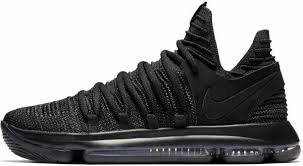

KD's

Progression of KD’s since 2008
History Of KD’s
Order of the top four KD’s sold
- Nike KD VI
- Nike KD X
- Nike KD 9
- Nike KD 7
Advantages of KD's
- They're light and thin, allowing for a great amount of breathing room.
- KD's, specifically the newer models, are very sturdy. The flyknit material allows for this strength.
- They're are great basketball shoes, as they supply strong traction and grip.
Disavantages of KD's
- They are not necessarily ideal to wear on other surfaces besides the court.
- They do not provide as much support as a Lebron or Air Jordan shoe.
- They are generally extremely expensive.